17. Application web MVC dans une architecture 3tier – Exemple 3 – Sgbd Firebird
17.1. La base de données Firebird
Dans cette nouvelle version, nous allons installer la liste des personnes dans une table de base de données Firebird. On trouvera dans le document [http://tahe.developpez.com/divers/sql-firebird/] des informations pour installer et gérer ce SGBD. Dans ce qui suit, les copies d’écran proviennent d’ IBExpert, un client d’administration des SGBD Interbase et Firebird.
La base de données s’appelle [dbpersonnes.gdb]. Elle contient une table [PERSONNES] :
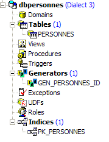
La table [PERSONNES] contiendra la liste des personnes gérée par l’application web. Elle a été construite avec les ordres SQL suivants :
- lignes 2-10 : la structure de la table [PERSONNES], destinée à sauvegarder des objets de type [Personne], reflète la structure de cet objet. Le type booléen n’existant pas dans Firebird, le champ [MARIE] (ligne 8) a été déclaré de type [SMALLINT], un entier. Sa valeur sera 0 (pas marié) ou 1 (marié).
- lignes 13-16 : des contraintes d’intégrité qui reflètent celles du validateur de données [ValidatePersonne].
- ligne 19 : le champ ID est clé primaire de la table [PERSONNES]
La table [PERSONNES] pourrait avoir le contenu suivant :

La base [dbpersonnes.gdb] a, outre la table [PERSONNES], un objet appelé générateur et nommé [GEN_PERSONNES_ID]. Ce générateur délivre des nombres entiers successifs que nous utiliserons pour donner sa valeur, à la clé primaire [ID] de la classe [PERSONNES]. Prenons un exemple pour illustrer son fonctionnement :
 |
 |
On peut constater que la valeur du générateur [GEN_PERSONNES_ID] a changé (double-clic dessus + F5 pour rafraîchir) :
 |
permet donc d’avoir la valeur suivante du générateur [GEN_PERSONNES_ID]. GEN_ID est une fonction interne de Firebird et [RDB$DATABASE], une table système de ce SGBD.
17.2. Le projet Eclipse des couches [dao] et [service]
Pour développer les couches [dao] et [service] de notre application avec base de données, nous utiliserons le projet Eclipse [mvc-personnes-03] suivant :

Le projet est un simple projet Java, pas un projet web Tomcat. Rappelons que la version 2 de notre application va utiliser la couche [web] de la version 1. Cette couche n’a donc pas à être écrite.
Dossier [src]
Ce dossier contient les codes source des couches [dao] et [service] :

On y trouve différents paquetages :
- [istia.st.mvc.personnes.dao] : contient la couche [dao]
- [istia.st.mvc.personnes.entites] : contient la classe [Personne]
- [istia.st.mvc.personnes.service] : contient la classe [service]
- [istia.st.mvc.personnes.tests] : contient les tests JUnit des couches [dao] et [service]
ainsi que des fichiers de configuration qui doivent être dans le ClassPath de l’application.
Dossier [database]
Ce dossier contient la base de données Firebird des personnes :

- [dbpersonnes.gdb] est la base de données.
- [dbpersonnes.sql] est le script SQL de génération de la base :
Dossier [lib]
Ce dossier contient les archives nécessaires à l’application :
 |
On notera la présence du pilote JDBC [firebirdsql-full.jar] du SGBD Firebird ainsi que d'un certain nombre d'archives [spring-*.jar]. Nous aurions pu utiliser l'unique archive [spring.jar] que l'on trouve dans le dossier [dist] de la distribution et qui contient la totalité des classes de Spring. On peut aussi n'utiliser que les seules archives nécessaires au projet. C'est ce que nous avons fait ici en nous laissant guider par les erreurs de classes absentes signalées par Eclipse et les noms des archives partielles de Spring. Toutes ces archives du dossier [lib] ont été placées dans le Classpath du projet.
Dossier [dist]
Ce dossier contiendra les archives issues de la compilation des classes de l’application :

- [personnes-dao.jar] : archive de la couche [dao]
- [personnes-service.jar] : archive de la couche [service]
17.3. La couche [dao]
17.3.1. Les composantes de la couche [dao]
La couche [dao] est constituée des classes et interfaces suivantes :

- [IDao] est l’interface présentée par la couche [dao]
- [DaoImplCommon] est une implémentation de celle-ci où le groupe de personnes se trouve dans une table de base de données. [DaoImplCommon] regroupe des fonctionnalités indépendantes du SGBD.
- [DaoImplFirebird] est une classe dérivée de [DaoImplCommon] pour gérer spécifiquement une base Firebird.
- [DaoException] est le type des exceptions non contrôlées, lancées par la couche [dao]. Cette classe est celle de la version 1.
L’interface [IDao] est la suivante :
- l’interface a les mêmes quatre méthodes que dans la version précédente.
La classe [DaoImplCommon] implémentant cette interface sera la suivante :
- lignes 8-9 : la classe [DaoImpl] implémente l’interface [IDao] et donc les quatre méthodes [getAll, getOne, saveOne, deleteOne].
- lignes 27-37 : la méthode [saveOne] utilise deux méthodes internes [insertPersonne] et [updatePersonne] selon qu'on doit faire un ajout ou une modification de personne.
- ligne 50 : la méthode privée [check] est celle de la version précédente. Nous ne reviendrons pas dessus.
- ligne 8 : pour implémenter l’interface [IDao], la classe [DaoImpl] dérive de la classe Spring [SqlMapClientDaoSupport].
17.3.2. La couche d’accès aux données [iBATIS]
La classe Spring [SqlMapClientDaoSupport] utilise un framework tierce [Ibatis SqlMap] disponible à l’url [http://ibatis.apache.org/] :

[iBATIS] est un projet Apache qui facilite la construction de couches [dao] s’appuyant sur des bases de données. Avec [iBATIS], l'architecture de la couche d'accès aux données est la suivante :
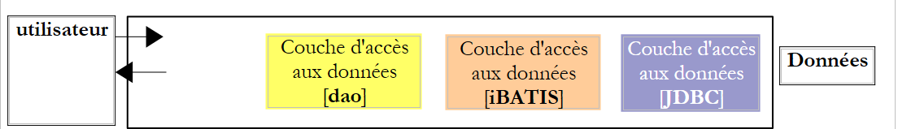 |
[iBATIS] s'insère entre la couche [dao] de l'application et le pilote JDBC de la base de données. Il existe des alternatives à [iBATIS] telle, par exemple, l'alternative [Hibernate] :
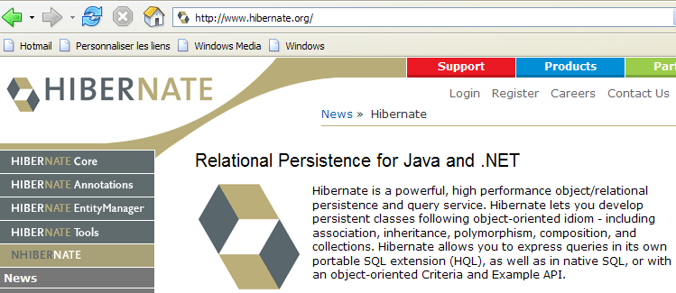
 |
L’utilisation du framework [iBATIS] nécessite deux archives [ibatis-common, ibatis-sqlmap] qui ont été toutes deux placées dans le dossier [lib] du projet :
 |
La classe [SqlMapClientDaoSupport] encapsule la partie générique de l’utilisation du framework [iBATIS], c.a.d. des parties de code qu’on retrouve dans toutes les couche [dao] utilisant l'outil [iBATIS]. Pour écrire la partie non générique du code, c’est à dire ce qui est spécifique à la couche [dao] que l’on écrit, il suffit de dériver la classe [SqlMapClientDaoSupport]. C’est ce que nous faisons ici.
La classe [SqlMapClientDaoSupport] est définie comme suit :

Parmi les méthodes de cette classe, l’une d’elles permet de configurer le client [iBATIS] avec lequel on va exploiter la base de données :
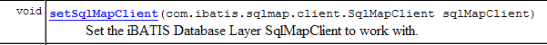
L’objet [SqlMapClient sqlMapClient] est l’objet [IBATIS] utilisé pour accéder à une base de données. A lui tout seul, il implémente la couche [iBATIS] de notre architecture :
 |
Une séquence typique d’actions avec cet objet est la suivante :
- demander une connexion à un pool de connexions
- ouvrir une transaction
- exécuter une série d’ordres SQL mémorisée dans un fichier de configuration
- fermer la transaction
- rendre la connexion au pool
Si notre implémentation [DaoImplCommon] travaillait directement avec [iBATIS], elle devrait faire cette séquence de façon répétée. Seule l’opération 3 est spécifique à une couche [dao], les autres opérations étant génériques. La classe Spring [SqlMapClientDaoSupport] assurera elle-même les opérations 1, 2, 4 et 5, déléguant l’opération 3 à sa classe dérivée, ici la classe [DaoImplCommon].
Pour pouvoir fonctionner, la classe [SqlMapClientDaoSupport] a besoin d’une référence sur l’objet iBATIS [SqlMapClient sqlMapClient] qui va assurer le dialogue avec la base de données. Cet objet a besoin de deux choses pour fonctionner :
- un objet [DataSource] connecté à la base de données auprès duquel il va demander des connexions
- un (ou des) fichier de configuration où sont externalisés les ordres SQL à exécuter. En effet, ceux-ci ne sont pas dans le code Java. Ils sont identifiés par un code dans un fichier de configuration et l’objet [SqlMapClient sqlMapClient] utilise ce code pour faire exécuter un ordre SQL particulier.
Un embryon de configuration de notre couche [dao] qui refléterait l'architecture ci-dessus serait le suivant :
<!-- la classes d'accè à la couche [dao] -->
<bean id="dao" class="istia.st.mvc.personnes.dao.DaoImplCommon">
<property name="sqlMapClient">
<ref local="sqlMapClient"/>
</property>
</bean>
Ici la propriété [sqlMapClient] (ligne 3) de la classe [DaoImplCommon] (ligne 2) est initialisée. Elle l’est par la méthode [setSqlMapClient] de la classe [DaoImpl]. Cette classe n’a pas cette méthode. C’est sa classe parent [SqlMapClientDaoSupport] qui l’a. C’est donc elle qui est en réalité initialisée ici.
Maintenant ligne 4, on fait référence à un objet nommé " sqlMapClient " qui reste à construire. Celui-ci, on l’a dit, est de type [SqlMapClient], un type [iBATIS] :

[SqlMapClient] est une interface. Spring offre la classe [SqlMapClientFactoryBean] pour obtenir un objet implémentant cette interface :

Rappelons que nous cherchons à instancier un objet implémentant l’interface [SqlMapClient]. Ce n’est apparemment pas le cas de la classe [SqlMapClientFactoryBean]. Celle-ci implémente l’interface [FactoryBean] (cf ci-dessus). Celle-ci a la méthode [getObject()] suivante :

Lorsqu’on demande à Spring une instance d’un objet implémentant l’interface [FactoryBean], il :
- crée une instance [I] de la classe - ici il crée une instance de type [SqlMapClientFactoryBean].
- rend à la méthode appelante, le résultat de la méthode [I].getObject() - la méthode [SqlMapClientFactoryBean].getObject() va rendre ici un objet implémentant l’interface [SqlMapClient].
Pour pouvoir rendre un objet implémentant l’interface [SqlMapClient], la classe [SqlMapClientFactoryBean] a besoin de deux informations nécessaires à cet objet :
- un objet [DataSource] connecté à la base de données auprès duquel il va demander des connexions
- un (ou des) fichier de configuration où sont externalisés les ordres SQL à exécuter
La classe [SqlMapClientFactoryBean] possède les méthodes set pour initialiser ces deux propriétés :

Nous progressons... Notre fichier de configuration se précise et devient :
<!-- SqlMapCllient -->
<bean id="sqlMapClient"
class="org.springframework.orm.ibatis.SqlMapClientFactoryBean">
<property name="dataSource">
<ref local="dataSource"/>
</property>
<property name="configLocation">
<value>classpath:sql-map-config-firebird.xml</value>
</property>
</bean>
<!-- la classes d'accè à la couche [dao] -->
<bean id="dao" class="istia.st.mvc.personnes.dao.DaoImplCommon">
<property name="sqlMapClient">
<ref local="sqlMapClient"/>
</property>
</bean>
- lignes 2-3 : le bean " sqlMapClient " est de type [SqlMapClientFactoryBean]. De ce qui vient d’être expliqué, nous savons que lorsque nous demandons à Spring une instance de ce bean, nous obtenons un objet implémentant l’interface iBATIS [SqlMapClient]. C’est ce dernier objet qui sera donc obtenu en ligne 14.
- lignes 7-9 : nous indiquons que le fichier de configuration nécessaire à l’objet iBATIS [SqlMapClient] s’appelle " sql-map-config-firebird.xml " et qu’il doit être cherché dans le ClassPath de l’application. La méthode [SqlMapClientFactoryBean].setConfigLocation est ici utilisée.
- lignes 4-6 : nous initialisons la propriété [dataSource] de [SqlMapClientFactoryBean] avec sa méthode [setDataSource].
Ligne 5, nous faisons référence à un bean appelé " dataSource " qui reste à construire. Si on regarde le paramètre attendu par la méthode [setDataSource] de [SqlMapClientFactoryBean], on voit qu’il est de type [DataSource] :

On a de nouveau affaire à une interface dont il nous faut trouver une classe d’implémentation. Le rôle d’une telle classe est de fournir à une application, de façon efficace, des connexions à une base de données particulière. Un SGBD ne peut maintenir ouvertes simultanément un grand nombre de connexions. Pour diminuer le nombre de connexions ouvertes à un moment donné, on est amenés, pour chaque échange avec la base, à :
- ouvrir une connexion
- commencer une transaction
- émettre des ordres SQL
- fermer la transaction
- fermer la connexion
Ouvrir et fermer des connexions de façon répétée est coûteux en temps. Pour résoudre ces deux problèmes (limiter à la fois le nombre de connexions ouvertes à un moment donné, et limiter le coût d’ouverture / fermeture de celles-ci, les classes implémentant l’interface [DataSource] procèdent souvent de la façon suivante :
- elles ouvrent dès leur instanciation, N connexions avec la base de données visée. N a en général une valeur par défaut et peut le plus souvent être défini dans un fichier de configuration. Ces N connexions vont rester tout le temps ouvertes et forment un pool de connexions disponibles pour les threads de l’application.
- lorsqu’un thread de l’application demande une ouverture de connexion, l’objet [DataSource] lui donne l’une des N connexions ouvertes au démarrage, s’il en reste de disponibles. Lorsque l’application ferme la connexion, cette dernière n’est en réalité pas fermée mais simplement remise dans le pool des connexions disponibles.
Il existe diverses implémentations de l’interface [DataSource] disponibles librement. Nous allons utiliser ici l’implémentation [commons DBCP] disponible à l’url [http://jakarta.apache.org/commons/dbcp/] :
L’utilisation de l’outil [commons DBCP] nécessite deux archives [commons-dbcp, commons-pool] qui ont été toutes deux placées dans le dossier [lib] du projet :
 |
La classe [BasicDataSource] de [commons DBCP] fournit l’implémentation [DataSource] dont nous avons besoin :

Cette classe va nous fournir un pool de connexions pour accéder à la base Firebird [dbpersonnes.gdb] de notre application. Pour cela, il faut lui donner les informations dont elle a besoin pour créer les connexions du pool :
- le nom du pilote JDBC à utiliser – initialisé avec [setDriverClassName]
- le nom de l’url de la base de données à exploiter - initialisé avec [setUrl]
- l’identifiant de l’utilisateur propriétaire de la connexion – initialisé avec [setUsername] (et non pas setUserName comme on aurait pu s'y attendre)
- son mot de passe - initialisé avec [setPassword]
Le fichier de configuration de notre couche [dao] pourra être le suivant :
<?xml version="1.0" encoding="ISO_8859-1"?>
<!DOCTYPE beans SYSTEM "http://www.springframework.org/dtd/spring-beans.dtd">
<beans>
<!-- la source de donnéees DBCP -->
<bean id="dataSource" class="org.apache.commons.dbcp.BasicDataSource"
destroy-method="close">
<property name="driverClassName">
<value>org.firebirdsql.jdbc.FBDriver</value>
</property>
<!-- attention : ne pas laisser d'espaces entre les deux balises <value> de l’url -->
<property name="url">
<value>jdbc:firebirdsql:localhost/3050:C:/data/2005-2006/eclipse/dvp-eclipse-tomcat/mvc-personnes-03/database/dbpersonnes.gdb</value>
</property>
<property name="username">
<value>sysdba</value>
</property>
<property name="password">
<value>masterkey</value>
</property>
</bean>
<!-- SqlMapCllient -->
<bean id="sqlMapClient"
class="org.springframework.orm.ibatis.SqlMapClientFactoryBean">
<property name="dataSource">
<ref local="dataSource"/>
</property>
<property name="configLocation">
<value>classpath:sql-map-config-firebird.xml</value>
</property>
</bean>
<!-- la classes d'accè à la couche [dao] -->
<bean id="dao" class="istia.st.mvc.personnes.dao.DaoImplCommon">
<property name="sqlMapClient">
<ref local="sqlMapClient"/>
</property>
</bean>
</beans>
- lignes 7-9 : le nom du pilote JDBC du SGBD Firebird
- lignes 11-13 : l’url de la base Firebird [dbpersonnes.gdb]. On fera particulièrement attention à l’écriture de celle-ci. Il ne doit y avoir aucun espace entre les balises <value> et l’url.
- lignes 14-16 : le propriétaire de la connexion – ici, [sysdba] qui est l’administrateur par défaut des distributions Firebird
- lignes 17-19 : son mot de passe [masterkey] – également la valeur par défaut
On a beaucoup progressé mais il reste toujours des points de configuration à élucider : la ligne 28 référence le fichier [sql-map-config-firebird.xml] qui doit configurer le client [SqlMapClient] d’iBATIS. Avant d’étudier son contenu, montrons l’emplacement de ces fichiers de configuration dans notre projet Eclipse :
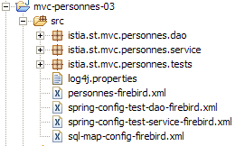
- [spring-config-test-dao-firebird.xml] est le fichier de configuration de la couche [dao] que nous venons d’étudier
- [sql-map-config-firebird.xml] est référencé par [spring-config-test-dao-firebird.xml]. Nous allons l’étudier.
- [personnes-firebird.xml] est référencé par [sql-map-config-firebird.xml]. Nous allons l’étudier.
Les trois fichiers précédents sont dans le dossier [src]. Sous Eclipse, cela signifie qu’à l’exécution ils seront présents dans le dossier [bin] du projet (non représenté ci-dessus). Ce dossier fait partie du ClassPath de l’application. Au final, les trois fichiers précédents seront donc bien présents dans le ClassPath de l’application. C’est nécessaire.
Le fichier [sql-map-config-firebird.xml] est le suivant :
<?xml version="1.0" encoding="UTF-8" ?>
<!DOCTYPE sqlMapConfig
PUBLIC "-//iBATIS.com//DTD SQL Map Config 2.0//EN"
"http://www.ibatis.com/dtd/sql-map-config-2.dtd">
<sqlMapConfig>
<sqlMap resource="personnes-firebird.xml"/>
</sqlMapConfig>
- ce fichier doit avoir <sqlMapConfig> comme balise racine (lignes 6 et 8)
- ligne 7 : la balise <sqlMap> sert à désigner les fichiers qui contiennent les ordres SQL à exécuter. Il y a souvent, mais ce n’est pas obligatoire, un fichier par table. Cela permet de rassembler les ordres SQL sur une table donnée dans un même fichier. Mais on trouve fréquemment des ordres SQL impliquant plusieurs tables. Dans ce cas, la décomposition précédente ne tient pas. Il faut simplement se rappeler que l’ensemble des fichiers désignés par les balises <sqlMap> seront fusionnés. Ces fichiers sont cherchés dans le ClassPath de l’application.
Le fichier [personnes-firebird.xml] décrit les ordres SQL qui vont être émis sur la table [PERSONNES] de la base de données Firebird [dbpersonnes.gdb]. Son contenu est le suivant :
<?xml version="1.0" encoding="UTF-8" ?>
<!DOCTYPE sqlMap
PUBLIC "-//iBATIS.com//DTD SQL Map 2.0//EN"
"http://www.ibatis.com/dtd/sql-map-2.dtd">
<sqlMap>
<!-- alias classe [Personne] -->
<typeAlias alias="Personne.classe"
type="istia.st.mvc.personnes.entites.Personne"/>
<!-- mapping table [PERSONNES] - objet [Personne] -->
<resultMap id="Personne.map"
class="Personne.classe">
<result property="id" column="ID" />
<result property="version" column="VERSION" />
<result property="nom" column="NOM"/>
<result property="prenom" column="PRENOM"/>
<result property="dateNaissance" column="DATENAISSANCE"/>
<result property="marie" column="MARIE"/>
<result property="nbEnfants" column="NBENFANTS"/>
</resultMap>
<!-- liste de toutes les personnes -->
<select id="Personne.getAll" resultMap="Personne.map" > select ID, VERSION, NOM,
PRENOM, DATENAISSANCE, MARIE, NBENFANTS FROM PERSONNES</select>
<!-- obtenir une personne en particulier -->
<select id="Personne.getOne" resultMap="Personne.map" >select ID, VERSION, NOM,
PRENOM, DATENAISSANCE, MARIE, NBENFANTS FROM PERSONNES WHERE ID=#value#</select>
<!-- ajouter une personne -->
<insert id="Personne.insertOne" parameterClass="Personne.classe">
<selectKey keyProperty="id">
SELECT GEN_ID(GEN_PERSONNES_ID,1) as "value" FROM RDB$$DATABASE
</selectKey>
insert into
PERSONNES(ID, VERSION, NOM, PRENOM, DATENAISSANCE, MARIE, NBENFANTS)
VALUES(#id#, #version#, #nom#, #prenom#, #dateNaissance#, #marie#,
#nbEnfants#) </insert>
<!-- mettre à jour une personne -->
<update id="Personne.updateOne" parameterClass="Personne.classe"> update
PERSONNES set VERSION=#version#+1, NOM=#nom#, PRENOM=#prenom#, DATENAISSANCE=#dateNaissance#,
MARIE=#marie#, NBENFANTS=#nbEnfants# WHERE ID=#id# and
VERSION=#version#</update>
<!-- supprimer une personne -->
<delete id="Personne.deleteOne" parameterClass="int"> delete FROM PERSONNES WHERE
ID=#value# </delete>
</sqlMap>
- le fichier doit avoir <sqlMap> comme balise racine (lignes 7 et 45)
- lignes 9-10 : pour faciliter l’écriture du fichier on donne l’alias (synonyme) [Personne.classe] à la classe [istia.st.springmvc.personnes.entites.Personne].
- lignes 12-21 : fixe les correspondances entre colonnes de la table [PERSONNES] et champs de l’objet [Personne].
- lignes 23-24 : l’ordre SQL [select] pour obtenir toutes les personnes de la table [PERSONNES]
- lignes 26-27 : l’ordre SQL [select] pour obtenir une personne particulière de la table [PERSONNES]
- lignes 29-36 : l’ordre SQL [insert] qui insère une personne dans la table [PERSONNES]
- lignes 38-41 : l’ordre SQL [update] qui met à jour une personne de la table [PERSONNES]
- lignes 42-44 : l’ordre SQL [delete] qui supprime une personne de la table [PERSONNES]
Le rôle et la signification du contenu du fichier [personnes-firebird.xml] vont être expliqués via l’étude de la classe [DaoImplCommon] qui implémente la couche [dao].
17.3.3. La classe [DaoImplCommon]
Revenons sur l’architecture d’accès aux données :
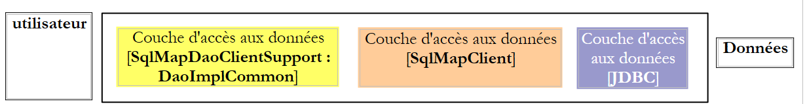 |
La classe [DaoImplCommon] est la suivante :
Nous allons étudier les méthodes les unes après les autres.
getAll
Cette méthode permet d’obtenir toutes les personnes de la liste. Son code est le suivant :
Rappelons-nous tout d’abord que la classe [DaoImplCommon] dérive de la classe Spring [SqlMapClientDaoSupport]. C’est cette classe qui a la méthode [getSqlMapClientTemplate()] utilisée ligne 3 ci-dessus. Cette méthode a la signature suivante :
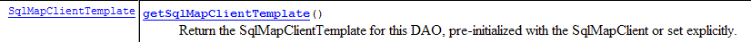
Le type [SqlMapClientTemplate] encapsule l’objet [SqlMapClient] de la couche [iBATIS]. C’est par lui qu’on aura accès à la base de données. Le type [iBATIS] SqlMapClient pourrait être directement utilisé puisque la classe [SqlMapClientDaoSupport] y a accès :

L’inconvénient de la classe [iBATIS] SqlMapClient est qu’elle lance des exceptions de type [SQLException], un type d'exception contrôlée, c.a.d. qui doit être gérée par un try / catch ou déclarée dans la signature des méthodes qui la lance. Or souvenons-nous que la couche [dao] implémente une interface [IDao] dont les méthodes ne comportent pas d’exceptions dans leurs signatures. Les méthodes des classes d’implémentation de l’interface [IDao] ne peuvent donc, elles non plus, avoir d’exceptions dans leurs signatures. Il nous faut donc intercepter chaque exception [SQLException] lancée par la couche [iBATIS] et l’encapsuler dans une exception non contrôlée. Le type [DaoException] de notre projet ferait l’affaire pour cette encapsulation.
Plutôt que de gérer nous-mêmes ces exceptions, nous allons les confier au type Spring [SqlMapClientTemplate] qui encapsule l’objet [SqlMapClient] de la couche [iBATIS]. En effet [SqlMapClientTemplate] a été construit pour intercepter les exceptions [SQLException] lancées par la couche [SqlMapClient] et les encapsuler dans un type [DataAccessException] non contrôlé. Ce comportement nous convient. On se souviendra simplement que la couche [dao] est désormais susceptible de lancer deux types d’exceptions non contrôlées :
- notre type propriétaire [DaoException]
- le type Spring [DataAccessException]
Le type [SqlMapClientTemplate] est défini comme suit :

Il implémente l’interface [SqlMapClientOperations] suivante :

Cette interface définit des méthodes capables d’exploiter le contenu du fichier [personnes-firebird.xml] :
[queryForList]

Cette méthode permet d’émettre un ordre [SELECT] et d’en récupérer le résultat sous forme d’une liste d’objets :
- [statementName] : l’identifiant (id) de l’ordre [select] dans le fichier de configuration
- [parameterObject] : l’objet " paramètre " pour un [select] paramétré. L’objet " paramètre " peut prendre deux formes :
- un objet respectant la norme Javabean : les paramètres de l’ordre [select] sont alors les noms des champs du Javabean. A l’exécution de l’ordre [select], ils sont remplacés par les valeurs de ces champs.
- un dictionnaire : les paramètres de l’ordre [select] sont alors les clés du dictionnaire. A l’exécution de l’ordre [select], celles-ci sont remplacées par leurs valeurs associées dans le dictionnaire.
- si le [SELECT] ne ramène aucune ligne, le résultat [List] est un objet vide d'éléments mais pas null (à vérifier).
[queryForObject]

Cette méthode est identique dans son esprit à la précédente mais elle ne ramène qu’un unique objet. Si le [SELECT] ne ramène aucune ligne, le résultat est le pointeur null.
[insert]

Cette méthode permet d’exécuter un ordre SQL [insert] paramétré par le second paramètre. L'objet rendu est la clé primaire de la ligne qui a été insérée. Il n'y a pas d'obligation à utiliser ce résultat.
[update]
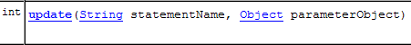
Cette méthode permet d’exécuter un ordre SQL [update] paramétré par le second paramètre. Le résultat est le nombre de lignes modifiées par l'ordre SQL [update].
[delete]

Cette méthode permet d’exécuter un ordre SQL [delete] paramétré par le second paramètre. Le résultat est le nombre de lignes supprimées par l'ordre SQL [delete].
Revenons à la méthode [getAll] de la classe [DaoImplCommon] :
- ligne 4 : l’ordre [select] nommé " Personne.getAll " est exécuté. Il n’est pas paramétré et donc l’objet " paramètre " est null.
Dans [personnes-firebird.xml], l’ordre [select] nommé " Personne.getAll " est le suivant :
<?xml version="1.0" encoding="UTF-8" ?>
<!DOCTYPE sqlMap
PUBLIC "-//iBATIS.com//DTD SQL Map 2.0//EN"
"http://www.ibatis.com/dtd/sql-map-2.dtd">
<sqlMap>
<!-- alias classe [Personne] -->
<typeAlias alias="Personne.classe"
type="istia.st.mvc.personnes.entites.Personne"/>
<!-- mapping table [PERSONNES] - objet [Personne] -->
<resultMap id="Personne.map"
class="Personne.classe">
<result property="id" column="ID" />
<result property="version" column="VERSION" />
<result property="nom" column="NOM"/>
<result property="prenom" column="PRENOM"/>
<result property="dateNaissance" column="DATENAISSANCE"/>
<result property="marie" column="MARIE"/>
<result property="nbEnfants" column="NBENFANTS"/>
</resultMap>
<!-- liste de toutes les personnes -->
<select id="Personne.getAll" resultMap="Personne.map" > select ID, VERSION, NOM,
PRENOM, DATENAISSANCE, MARIE, NBENFANTS FROM PERSONNES</select>
...
</sqlMap>
- ligne 23 : l’ordre SQL " Personne.getAll " est non paramétré (absence de paramètres dans le texte de la requête).
- la ligne 3 de la méthode [getAll] demande l’exécution de la requête [select] appelée " Personne.getAll ". Celle-ci va être exécutée. [iBATIS] s’appuie sur JDBC. On sait alors que le résultat de la requête va être obtenu sous la forme d’un objet [ResultSet]. Ligne 23, l’attribut [resultMap] de la balise <select> indique à [iBATIS] quel " resultMap " il doit utiliser pour transformer chaque ligne du [ResultSet] obtenu en objet. C’est le " resultMap " [Personne.map] défini lignes 12-21 qui indique comment passer d’une ligne de la table [PERSONNES] à un objet de type [Personne]. [iBATIS] va utiliser ces correspondances pour fournir une liste d’objets [Personne] à partir des lignes de l’objet [ResultSet].
- la ligne 3 de la méthode [getAll] renvoie alors une collection d’objets [Personne]
- la méthode [queryForList] peut lancer une exception Spring [DataAccessException]. Nous la laissons remonter.
Nous expliquons les autres méthodes de la classe [AbstractDaoImpl] plus rapidement, l’essentiel sur l’utilisation d’[iBATIS] ayant été dit dans l’étude de la méthode [getAll].
getOne
Cette méthode permet d’obtenir une personne identifiée par son [id]. Son code est le suivant :
- ligne 4 : demande l’exécution de l’ordre [select] nommé " Personne.getOne ". Celui-ci est le suivant dans le fichier [personnes-firebird.xml] :
<!-- obtenir une personne en particulier -->
<select id="Personne.getOne" resultMap="Personne.map" parameterClass="int">
select ID, VERSION, NOM, PRENOM, DATENAISSANCE, MARIE, NBENFANTS FROM
PERSONNES WHERE ID=#value#</select>
L’ordre SQL est paramétré par le paramètre #value# (ligne 4). L’attribut #value# désigne la valeur du paramètre passé à l’ordre SQL, lorsque ce paramètre est de type simple : Integer, Double, String, ... Dans les attributs de la balise <select>, l’attribut [parameterClass] indique que le paramètre est de type entier (ligne 2). Ligne 5 de [getOne], on voit que ce paramètre est l’identifiant de la personne cherchée sous la forme d’un objet Integer. Ce changement de type est obligatoire puisque le second paramètre de [queryForList] doit être de type [Object].
Le résultat de la requête [select] sera à transformer en objet via l’attribut [resultMap="Personne.map"] (ligne 2). On obtiendra donc un type [Personne].
- lignes 7-11 : si la requête [select] n’a ramené aucune ligne, on récupère alors le pointeur null en ligne 4. Cela signifie qu’on n’a pas trouvé la personne cherchée. Dans ce cas, on lance une [DaoException] de code 2 (lignes 9-10).
- ligne 13 : s’il n’y a pas eu d’exception, alors on rend l’objet [Personne] demandé.
deleteOne
Cette méthode permet de supprimer une personne identifiée par son [id]. Son code est le suivant :
- lignes 4-5 : demande l’exécution de l’ordre [delete] nommé " Personne.deleteOne ". Celui-ci est le suivant dans le fichier [personnes-firebird.xml] :
<!-- supprimer une personne -->
<delete id="Personne.deleteOne" parameterClass="int"> delete FROM PERSONNES WHERE
ID=#value# </delete>
L’ordre SQL est paramétré par le paramètre #value# (ligne 3) de type [parameterClass="int"] (ligne 2). Ce sera l’identifiant de la personne cherchée (ligne 5 de deleteOne)
- ligne 4 : le résultat de la méthode [SqlMapClientTemplate].delete est le nombre de lignes détruites.
- lignes 7-8 : si la requête [delete] n’a détruit aucune ligne, cela signifie que la personne n’existe pas. On lance une [DaoException] de code 2 (ligne 8).
saveOne
Cette méthode permet d’ajouter une nouvelle personne ou de modifier une personne existante. Son code est le suivant :
- ligne 4 : on vérifie la validité de la personne avec la méthode [check]. Cette méthode existait déjà dans la version précédente et avait été alors commentée. Elle lance une [DaoException] si la personne est invalide. On laisse remonter celle-ci.
- ligne 6 : si on arrive là, c’est qu’il n’y a pas eu d’exception. La personne est donc valide.
- lignes 6-11 : selon l’id de la personne, on a affaire à un ajout (id= -1) ou à une mise à jour (id<> -1). Dans les deux cas, on fait appel à deux méthodes internes à la classe :
- insertPersonne : pour l’ajout
- updatePersonne : pour la mise à jour
insertPersonne
Cette méthode permet d’ajouter une nouvelle personne. Son code est le suivant :
- ligne 4 : on met à 1 le n° de version de la personne que l’on est en train de créer
- ligne 9 : on fait l’insertion via la requête nommée " Personne.insertOne " qui est la suivante :
<insert id="Personne.insertOne" parameterClass="Personne.classe">
<selectKey keyProperty="id">
SELECT GEN_ID(GEN_PERSONNES_ID,1) as "value" FROM RDB$$DATABASE
</selectKey>
insert into
PERSONNES(ID, VERSION, NOM, PRENOM, DATENAISSANCE, MARIE, NBENFANTS)
VALUES(#id#, #version#, #nom#, #prenom#, #dateNaissance#, #marie#,
#nbEnfants#) </insert>
C’est une requête paramétrée et le paramètre est de type [Personne] (parameterClass="Personne.classe", ligne 1). Les champs de l’objet [Personne] passés en paramètre (ligne 9 de insertPersonne) sont utilisés pour remplir les colonnes de la ligne qui va être insérée dans la table [PERSONNES] (lignes 5-8). On a un problème à résoudre. Lors d'une insertion, l’objet [Personne] à insérer a son id égal à -1. Il faut remplacer cette valeur par une clé primaire valide. On utilise pour cela les lignes 2-4 de la balise <selectKey> ci-dessus. Elles indiquent :
- (suite)
- la requête SQL à exécuter pour obtenir une valeur de clé primaire. Celle indiquée ici est celle que nous avons présentée au paragraphe 17.1. Deux points sont à noter :
- as " value " est obligatoire. On peut aussi écrire as value mais value est un mot clé de Firebird qui a du être protégé par des guillemets.
- la table Firebird s'appelle en réalité [RDB$DATABASE]. Mais le caractère $ est interprété par [iBATIS]. Il a été protégé en le dédoublant.
- le champ de l'objet [Personne] qu'il faut initialiser avec la valeur récupérée par l'ordre [SELECT], ici le champ [id]. C'est l'attribut [keyProperty] de la ligne 2 qui indique ce champ.
- la requête SQL à exécuter pour obtenir une valeur de clé primaire. Celle indiquée ici est celle que nous avons présentée au paragraphe 17.1. Deux points sont à noter :
- lignes 6-7 : pour le besoin des tests, nous serons amenés à attendre 10 ms avant de faire l'insertion, ceci pour voir s’il y a des conflits entre threads qui voudraient faire en même temps des ajouts.
updatePersonne
Cette méthode permet de modifier une personne existant déjà dans la table [PERSONNES]. Son code est le suivant :
- une mise à jour peut échouer pour au moins deux raisons :
- la personne à mettre à jour n’existe pas
- la personne à mettre à jour existe mais le thread qui veut la modifier n’a pas la bonne version
- lignes 7-8 : la requête SQL [update] nommée " Personne.updateOne " est exécutée. C'est la suivante :
<!-- mettre à jour une personne -->
<update id="Personne.updateOne" parameterClass="Personne.classe"> update
PERSONNES set VERSION=#version#+1, NOM=#nom#, PRENOM=#prenom#, DATENAISSANCE=#dateNaissance#,
MARIE=#marie#, NBENFANTS=#nbEnfants# WHERE ID=#id# and
VERSION=#version#</update>
- (suite)
- ligne 2 : la requête est paramétrée et admet pour paramètre un type [Personne] (parameterClass="Personne.classe"). Celui-ci est la personne à modifier (ligne 8 – updatePersonne).
- on ne veut modifier que la personne de la table [PERSONNES] ayant le même n° [id] et la même version [version] que le paramètre. C’est pourquoi, on a la contrainte [WHERE ID=#id# and VERSION=#version#]. Si cette personne est trouvée, elle est mise à jour avec la personne paramètre et sa version est augmentée de 1 (ligne 3 ci-dessus).
- ligne 9 : on récupère le nombre de lignes mises à jour.
- lignes 10-11 : si ce nombre est nul, on lance une [DaoException] de code 2, indiquant que, soit la personne à mettre à jour n’existe pas, soit elle a changé de version entre-temps.
17.4. Tests de la couche [dao]
17.4.1. Tests de l'implémentation [DaoImplCommon]
Maintenant que nous avons écrit la couche [dao], nous nous proposons de la tester avec des tests JUnit :

Avant de faire des tests intensifs, nous pouvons commencer par un simple programme de type [main] qui va afficher le contenu de la table [PERSONNES]. C’est la classe [MainTestDaoFirebird] :
Le fichier de configuration [spring-config-test-dao-firebird.xml] de la couche [dao], utilisé lignes 13-14, est le suivant :
<?xml version="1.0" encoding="ISO_8859-1"?>
<!DOCTYPE beans SYSTEM "http://www.springframework.org/dtd/spring-beans.dtd">
<beans>
<!-- la source de donnéees DBCP -->
<bean id="dataSource" class="org.apache.commons.dbcp.BasicDataSource"
destroy-method="close">
<property name="driverClassName">
<value>org.firebirdsql.jdbc.FBDriver</value>
</property>
<!-- attention : ne pas laisser d'espaces entre les deux balises <value> -->
<property name="url">
<value>jdbc:firebirdsql:localhost/3050:C:/data/2005-2006/eclipse/dvp-eclipse-tomcat/mvc-personnes-03/database/dbpersonnes.gdb</value>
</property>
<property name="username">
<value>sysdba</value>
</property>
<property name="password">
<value>masterkey</value>
</property>
</bean>
<!-- SqlMapCllient -->
<bean id="sqlMapClient"
class="org.springframework.orm.ibatis.SqlMapClientFactoryBean">
<property name="dataSource">
<ref local="dataSource"/>
</property>
<property name="configLocation">
<value>classpath:sql-map-config-firebird.xml</value>
</property>
</bean>
<!-- la classes d'accè à la couche [dao] -->
<bean id="dao" class="istia.st.mvc.personnes.dao.DaoImplCommon">
<property name="sqlMapClient">
<ref local="sqlMapClient"/>
</property>
</bean>
</beans>
Ce fichier est celui étudié au paragraphe 17.3.2.
Pour le test, le SGBD Firebird est lancé. Le contenu de la table [PERSONNES] est le suivant :

L’exécution du programme [MainTestDaoFirebird] donne les résultats écran suivants :

On a bien obtenu la liste des personnes. On peut passer au test JUnit.
Le test JUnit [TestDaoFirebird] est le suivant :
- les tests [test1] à [test5] sont les mêmes que dans la version 1, sauf [test4] qui a légèrement évolué. Le test [test6] est lui nouveau. Nous ne commentons que ces deux tests.
[test4]
[test4] a pour objectif de tester la méthode [updatePersonne - DaoImplCommon]. On rappelle le code de celle-ci :
- lignes 4-5 : on attend 10 ms. On force ainsi le thread qui exécute [updatePersonne] à perdre le processeur, ce qui peut augmenter nos chances de voir des conflits d’accès entre threads concurrents.
[test4] lance N=100 threads chargés d’incrémenter, en même temps, de 1 le nombre d’enfants de la même personne. On veut voir comment les conflits de version et les conflits d’accès sont gérés.
Les threads sont créés lignes 8-13. Chacun va augmenter de 1 le nombre d'enfants de la personne créée lignes 3-5. Les threads [ThreadDaoMajEnfants ] de mise à jour sont les suivants :
Une mise à jour de personne peut échouer parce que la personne qu’on veut modifier n’existe pas ou qu’elle a été mise à jour auparavant par un autre thread. Ces deux cas sont ici gérés lignes 67-69. Dans ces deux cas en effet, la méthode [updatePersonne] lance une [DaoException] de code 2. Le thread sera alors ramené à recommencer la procédure de mise à jour depuis son début (boucle while, ligne 34).
[test6]
[test6] a pour objectif de tester la méthode [insertPersonne - DaoImplCommon]. On rappelle le code de celle-ci :
- lignes 6-7 : on attend 10 ms pour forcer le thread qui exécute [insertPersonne] à perdre le processeur et augmenter ainsi nos chances de voir apparaître des conflits dus à des threads qui font des insertions en même temps.
Le code de [test6] est le suivant :
On crée 100 threads qui vont insérer en même temps 100 personnes différentes. Ces 100 threads vont tous obtenir une clé primaire pour la personne qu’ils doivent insérer puis être interrompus pendant 10 ms (ligne 10 – insertPersonne) avant de pouvoir faire leur insertion. On veut vérifier que les choses se passent bien et que notamment ils obtiennent bien des valeurs de clé primaire différentes.
- lignes 7-11 : un tableau de 100 personnes est créé. Ces personnes sont toutes des copies de la personne p créée lignes 4-5.
- lignes 14-17 : les 100 threads d'insertion sont lancés. Chacun d'eux est chargé d'insérer l'une des 100 personnes créée précédemment..
- lignes 19-23 : [test6] attend la fin de chacun des 100 threads qu'il a lancés. Lorsqu'il a détecté la fin du thread n° i, il supprime la personne que ce thread vient d'insérer.
Le thread d’insertion [ThreadDaoInsertPersonne] est le suivant :
- lignes 19-22 : le constructeur du thread mémorise la personne qu'il doit insérer et la couche [dao] qu'il doit utiliser pour faire cette insertion.
- ligne 30 : la personne est insérée. Si une exception se produit, elle remonte à [test6].
Tests
Aux tests, on obtient les résultats suivants :
 |
Le test [test4] échoue donc. Le nombre d'enfants est passé à 69 au lieu de 100 attendu. Que s'est-il passé ? Examinons les logs écran. Ils montrent l'existence d'exceptions lancées par Firebird :
Exception in thread "Thread-62" org.springframework.jdbc.UncategorizedSQLException: SqlMapClient operation; uncategorized SQLException for SQL []; SQL state [HY000]; error code [335544336];
--- The error occurred in personnes-firebird.xml.
--- The error occurred while applying a parameter map.
--- Check the Personne.updateOne-InlineParameterMap.
--- Check the statement (update failed).
--- Cause: org.firebirdsql.jdbc.FBSQLException: GDS Exception. 335544336. deadlock
update conflicts with concurrent update; nested exception is com.ibatis.common.jdbc.exception.NestedSQLException:
--- The error occurred in personnes-firebird.xml.
--- The error occurred while applying a parameter map.
- ligne 1 – on a eu une exception Spring [org.springframework.jdbc.UncategorizedSQLException]. C'est une exception non contrôlée qui a été utilisée pour encapsuler une exception lancée par le pilote JDBC de Firebird, décrite ligne 6.
- ligne 6 – le pilote JDBC de Firebird a lancé une exception de type [org.firebirdsql.jdbc.FBSQLException] et de code d'erreur 335544336.
- ligne 7 : indique qu'on a eu un conflit d'accès entre deux threads qui voulaient mettre à jour en même temps la même ligne de la table [PERSONNES].
Ce n'est pas une erreur irrécupérable. Le thread qui intercepte cette exception peut retenter la mise à jour. Il faut pour cela modifier le code de [ThreadDaoMajEnfants] :
- ligne 8 : on gère une exception de type [DaoException]. D'après ce qui a été dit, il nous faudrait gérer l'exception qui est apparue aux tests, le type [org.springframework.jdbc.UncategorizedSQLException]. On ne peut cependant pas se contenter de gérer ce type qui est un type générique de Spring destiné à encapsuler des exceptions qu'il ne connaît pas. Spring connaît les exceptions émises par les pilotes JDBC d'un certain nombre de SGBD tels Oracle, MySQL, Postgres, DB2, SQL Server, ... mais pas Firebird. Aussi toute exception lancée par le pilote JDBC de Firebird se trouve-t-elle encapsulée dans le type Spring [org.springframework.jdbc.UncategorizedSQLException] :
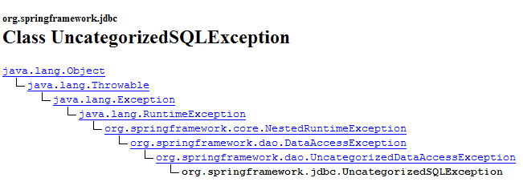
On voit ci-dessus, que la classe [UncategorizedSQLException] dérive de la classe [DataAccessException] que nous avons évoquée, paragraphe 17.3.3. Il est possible de connaître l'exception qui a été encapsulée dans [UncategorizedSQLException] grâce à sa méthode [getSQLException] :

Cette exception de type [SQLException] est celle lancée par la couche [iBATIS] qui elle même encapsule l'exception lancée par le pilote JDBC de la base de données. La cause exacte de l'exception de type [SQLException] peut être obtenue par la méthode :

On obtient l'objet de type [Throwable] qui a été lancé par le pilote JDBC :

Le type [Throwable] est la classe parent de [Exception].
Ici il nous faudra vérifier que l'objet de type [Throwable] lancé par le pilote JDBC de Firebird et cause de l'exception [SQLException] lancée par la couche [iBATIS] est bien une exception de type [org.firebirdsql.gds.GDSException] et de code d'erreur 335544336. Pour récupérer le code erreur, nous pourrons utiliser la méthode [getErrorCode()] de la classe [org.firebirdsql.gds.GDSException].
Si nous utilisons dans le code de [ThreadDaoMajEnfants] l'exception [org.firebirdsql.gds.GDSException], alors ce thread ne pourra travailler qu'avec le SGBD Firebird. Il en sera de même du test [test4] qui utilise ce thread. Nous voulons éviter cela. En effet, nous souhaitons que nos tests JUnit restent valables quelque soit le SGBD utilisé. Pour arriver à ce résultat, on décide que la couche [dao] lancera une [DaoException] de code 4 lorsqu'une exception de type " conflit de mise à jour " est détectée et ce, quelque soit le SGBD sous-jacent. Ainsi, le thread [ThreadDaoMajEnfants] pourra-t-il être réécrit comme suit :
- lignes 34-36 : l'exception de type [DaoException] de code 4 est interceptée. Le thread [ThreadDaoMajEnfants] va être forcé de recommencer la procédure de mise à jour à son début (ligne 10)
Notre couche [dao] doit donc être capable de reconnaître une exception de type " conflit de mise à jour ". Celle-ci est émise par un pilote JDBC et lui est spécifique. Cette exception doit être gérée dans la méthode [updatePersonne] de la classe [DaoImplCommon] :
Les lignes 7-11 doivent être entourées par un try / catch. Pour le SGBD Firebird, il nous faut vérifier que l'exception qui a causé l'échec de la mise à jour est de type [org.firebirdsql.gds.GDSException] et a comme code d'erreur 335544336. Si on met ce type de test dans [DaoImplCommon], on va lier cette classe au SGBD Firebird, ce qui n'est évidemment pas souhaitable. Si on veut garder un caractère généraliste à la classe [DaoImplCommon], il nous faut la dériver et gérer l'exception dans une classe spécifique à Firebird. C'est ce que nous faisons maintenant.
17.4.2. La classe [DaoImplFirebird]
Son code est le suivant :
- ligne 5 : la classe [DaoImplFirebird] dérive de [DaoImplCommon], la classe que nous venons d’étudier. Elle redéfinit, lignes 8-33, la méthode [updatePersonne] qui nous pose problème.
- lignes 20 : nous interceptons l'exception Spring de type [UncategorizedSQLException]
- lignes 21-22 : nous vérifions que l'exception sous-jacente de type [SQLException] et lancée par la couche [iBATIS] a pour cause une exception de type [org.firebirdsql.jdbc.FBSQLException]
- ligne 25 : on vérifie de plus que le code erreur de cette exception Firebird est 335544336, le code d'erreur du " deadlock ".
- lignes 26-27 : si toutes ces conditions sont réunies, une [DaoException] de code 4 est lancée.
- lignes 36-44 : la méthode [wait] permet d’arrêter le thread courant de N millisecondes. Elle n’a d’utilité que pour les tests.
Nous sommes prêts pour les tests de la nouvelle couche [dao].
17.4.3. Tests de l'implémentation [DaoImplFirebird]
Le fichier de configuration des tests [spring-config-test-dao-firebird.xml] est modifié pour utiliser l'implémentation [DaoImplFirebird] :
<?xml version="1.0" encoding="ISO_8859-1"?>
<!DOCTYPE beans SYSTEM "http://www.springframework.org/dtd/spring-beans.dtd">
<beans>
<!-- la source de donnéees DBCP -->
<bean id="dataSource" class="org.apache.commons.dbcp.BasicDataSource"
destroy-method="close">
<property name="driverClassName">
<value>org.firebirdsql.jdbc.FBDriver</value>
</property>
<!-- attention : ne pas laisser d'espaces entre les deux balises <value> -->
<property name="url">
<value>jdbc:firebirdsql:localhost/3050:C:/data/2005-2006/eclipse/dvp-eclipse-tomcat/mvc-personnes-03/database/dbpersonnes.gdb</value>
</property>
<property name="username">
<value>sysdba</value>
</property>
<property name="password">
<value>masterkey</value>
</property>
</bean>
<!-- SqlMapCllient -->
<bean id="sqlMapClient"
class="org.springframework.orm.ibatis.SqlMapClientFactoryBean">
<property name="dataSource">
<ref local="dataSource"/>
</property>
<property name="configLocation">
<value>classpath:sql-map-config-firebird.xml</value>
</property>
</bean>
<!-- la classes d'accè à la couche [dao] -->
<bean id="dao" class="istia.st.mvc.personnes.dao.DaoImplFirebird">
<property name="sqlMapClient">
<ref local="sqlMapClient"/>
</property>
</bean>
</beans>
- ligne 32 : la nouvelle implémentation [DaoImplFirebird] de la couche [dao].
Les résultats du test [test4] qui avait échoué précédemment sont les suivants :

[test4] a été réussi. Les dernières lignes de logs écran sont les suivantes :
La dernière ligne indique que c’est le thread n° 36 qui a terminé le dernier. La ligne 3 montre un conflit de version qui a forcé le thread n° 36 à reprendre sa procédure de mise à jour de la personne (ligne 4). D’autres logs montrent des conflits d’accès lors des mises à jour :
La ligne 2 montre que le thread n° 75 a échoué lors de sa mise à jour à cause d’un conflit de mise à jour : lorsque la commande SQL [update] a été émise sur la table [PERSONNES], la ligne qu’il fallait mettre à jour était verrouillée par un autre thread. Ce conflit d'accès va obliger le thread n° 75 à retenter sa mise à jour.
Pour terminer avec [test4] on remarquera une différence notable avec les résultats du même test dans la version 1 où il avait échoué à cause de problèmes de synchronisation. Les méthodes de la couche [dao] de la version 1 n’étant pas synchronisées, des conflits d’accès apparaissaient. Ici, nous n’avons pas eu besoin de synchroniser la couche [dao]. Nous avons simplement géré les conflits d’accès signalés par Firebird.
Exécutons maintenant la totalité du test JUnit de la couche [dao] :

Il semble donc qu’on ait une couche [dao] valide. Pour la déclarer valide avec une forte probabilité, il nous faudrait faire davantage de tests. Néanmoins, nous la considèrerons comme opérationnelle.
17.5. La couche [service]
17.5.1. Les composantes de la couche [service]
La couche [service] est constituée des classes et interfaces suivantes :
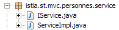
- [IService] est l’interface présentée par la couche [service]
- [ServiceImpl] est une implémentation de celle-ci
L’interface [IService] est la suivante :
- l’interface a les mêmes quatre méthodes que dans la version 1 mais elle en a deux de plus :
- saveMany : permet de sauvegarder plusieurs personnes en même temps de façon atomique. Soit elles sont toutes sauvegardées, soit aucune ne l’est.
- deleteMany : permet de supprimer plusieurs personnes en même temps de façon atomique. Soit elles sont toutes supprimées, soit aucune ne l’est.
Ces deux méthodes ne seront pas utilisées par l’application web. Nous les avons rajoutées pour illustrer la notion de transaction sur une base de données. Les deux méthodes devront en effet être exécutées au sein d’une transaction pour obtenir l’atomicité désirée.
La classe [ServiceImpl] implémentant cette interface sera la suivante :
- les méthodes [getAll, getOne, insertOne, saveOne] font appel aux méthodes de la couche [dao] de même nom.
- lignes 42-47 : la méthode [saveMany] sauvegarde, une par une, les personnes du tableau passé en paramètre.
- lignes 50-55 : la méthode [deleteMany] supprime, une par une, les personnes dont on lui a passé le tableau des id en paramètre
Nous avons dit que les méthodes [saveMany] et [deleteMany] devaient se faire au sein d’une transaction pour assurer l’aspect tout ou rien de ces méthodes. Nous pouvons constater que le code ci-dessus ignore totalement cette notion de transaction. Celle-ci n’apparaîtra que dans le fichier de configuration de la couche [service].
17.5.2. Configuration de la couche [service]
Ci-dessus, ligne 11, on voit que l’implémentation [ServiceImpl] détient une référence sur la couche [dao]. Celle-ci, comme dans la version 1, sera initialisée par Spring au moment de l’instanciation de la couche [service - ServiceImpl]. Le fichier de configuration qui permettra l’instanciation de la couche [service] sera le suivant :
<?xml version="1.0" encoding="ISO_8859-1"?>
<!DOCTYPE beans SYSTEM "http://www.springframework.org/dtd/spring-beans.dtd">
<beans>
<!-- la source de donnéees DBCP -->
<bean id="dataSource" class="org.apache.commons.dbcp.BasicDataSource"
destroy-method="close">
<property name="driverClassName">
<value>org.firebirdsql.jdbc.FBDriver</value>
</property>
<property name="url">
<!-- attention : ne pas laisser d'espaces entre les deux balises <value> -->
<value>jdbc:firebirdsql:localhost/3050:C:/data/2005-2006/eclipse/dvp-eclipse-tomcat/mvc-personnes-03/database/dbpersonnes.gdb</value>
</property>
<property name="username">
<value>sysdba</value>
</property>
<property name="password">
<value>masterkey</value>
</property>
</bean>
<!-- SqlMapCllient -->
<bean id="sqlMapClient"
class="org.springframework.orm.ibatis.SqlMapClientFactoryBean">
<property name="dataSource">
<ref local="dataSource"/>
</property>
<property name="configLocation">
<value>classpath:sql-map-config-firebird.xml</value>
</property>
</bean>
<!-- la classes d'accès à la couche [dao] -->
<bean id="dao" class="istia.st.mvc.personnes.dao.DaoImplFirebird">
<property name="sqlMapClient">
<ref local="sqlMapClient"/>
</property>
</bean>
<!-- gestionnaire de transactions -->
<bean id="transactionManager"
class="org.springframework.jdbc.datasource.DataSourceTransactionManager">
<property name="dataSource">
<ref local="dataSource"/>
</property>
</bean>
<!-- la classes d'accès à la couche [service] -->
<bean id="service"
class="org.springframework.transaction.interceptor.TransactionProxyFactoryBean">
<property name="transactionManager">
<ref local="transactionManager"/>
</property>
<property name="target">
<bean class="istia.st.mvc.personnes.service.ServiceImpl">
<property name="dao">
<ref local="dao"/>
</property>
</bean>
</property>
<property name="transactionAttributes">
<props>
<prop key="get*">PROPAGATION_SUPPORTS,readOnly</prop>
<prop key="save*">PROPAGATION_REQUIRED</prop>
<prop key="delete*">PROPAGATION_REQUIRED</prop>
</props>
</property>
</bean>
</beans>
- lignes 1-36 : configuration de la couche [dao]. Cette configuration a été expliquée lors de l’étude de la couche [dao] au paragraphe 17.3.2.
- lignes 38-64 : configurent la couche [service]
Ligne 46, on peut voir que l’implémentation de la couche [service] est faite par le type [TransactionProxyFactoryBean]. On s’attendait à trouver le type [ServiceImpl]. [TransactionProxyFactoryBean] est un type prédéfini de Spring. Comment se peut-il qu’un type prédéfini puisse implémenter l’interface [IService] qui elle, est spécifique à notre application ?
Découvrons tout d’abord la classe [TransactionProxyFactoryBean] :
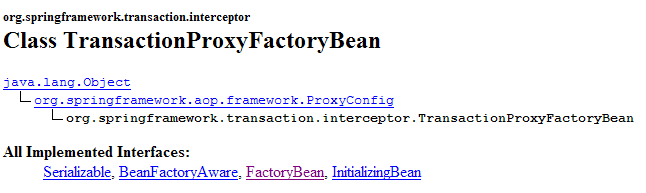
Nous voyons qu’elle implémente l’interface [FactoryBean]. Nous avons déjà rencontré cette interface. Nous savons que lorsqu’une application demande à Spring, une instance d’un type implémentant [FactoryBean], Spring rend non pas une instance [I] de ce type, mais l’objet rendu par la méthode [I].getObject() :

Dans notre cas, la couche [service] va être implémentée par l’objet rendu par [TransactionProxyFactoryBean].getObject(). Quelle est la nature de cet objet ? Nous n’allons pas rentrer dans les détails car ils sont complexes. Ils relèvent de ce qu’on appelle Spring AOP (Aspect Oriented Programming). Nous allons tenter d’éclaircir les choses avec de simples schémas. AOP permet la chose suivante :
- on a deux classes C1 et C2, C1 utilisant l'interface [I2] présentée par C2 :
 |
- grâce à AOP, on peut placer, de façon transparente pour les deux classes, un intercepteur entre les classes C1 et C2 :
 |
La classe [C1] a été compilée pour travailler avec l'interface [I2] que [C2] implémente. Au moment de l’exécution, AOP vient placer la classe [intercepteur] entre [C1] et [C2]. Pour que cela soit possible, il faut bien sûr que la classe [intercepteur] présente à [C1] la même interface [I2] que [C2].
A quoi cela peut-il servir ? La documentation Spring donne quelques exemples. On peut vouloir faire, par exemple, des logs à l'occasion des appels à une méthode M particulière de [C2], pour faire un audit de cette méthode. Dans [intercepteur], on écrira alors une méthode [M] qui fait ces logs. L’appel de [C1] à [C2].M va se passer ainsi (cf schéma ci-dessus) :
- [C1] appelle la méthode M de [C2]. C’est en fait la méthode M de [intercepteur] qui sera appelée. Cela est possible si [C1] s’adresse à une interface [I2] plutôt qu’à une implémentation particulière de [I2]. Il suffit alors que [intercepteur] implémente [I2].
- la méthode M de [intercepteur] fait les logs et appelle la méthode M de [C2] visée initialement par [C1].
- la méthode M de [C2] s’exécute et rend son résultat à la méthode M de [intercepteur] qui peut éventuellement ajouter quelque chose à ce qui a été fait en 2.
- la méthode M de [intercepteur] rend un résultat à la méthode appelante de [C1]
On voit que la méthode M de [intercepteur] peut faire quelque chose avant et après l’appel de la méthode M de [C2]. Vis à vis de [C1], elle enrichit donc la méthode M de [C2]. On peut donc voir la technologie AOP comme une façon d’enrichir l’interface présentée par une classe.
Comment ce concept s’applique-t-il à notre couche [service] ? Si on implémente la couche [service] directement avec une instance [ServiceImpl], notre application web aura l’architecture suivante :
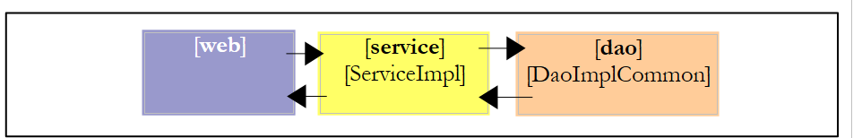 |
Si on implémente la couche [service] avec une instance [TransactionProxyFactoryBean], on aura l’architecture suivante :
 |
On peut dire que la couche [service] est instanciée avec deux objets :
- l’objet que nous appelons ci-dessus [proxy transactionnel] et qui est en fait l’objet rendu par la méthode [getObject] de [TransactionProxyFactoryBean]. C’est cet objet qui fera l’interface de la couche [service] avec la couche [web]. Il implémente par construction l’interface [IService].
- une instance [ServiceImpl] qui elle aussi implémente l’interface [IService]. Elle seule sait comment travailler avec la couche [dao], aussi est-elle nécessaire.
Imaginons que la couche [web] appelle la méthode [saveMany] de l’interface [IService]. Nous savons que fonctionnellement, les ajouts / mises à jour faits par cette méthode doivent l'être dans une transaction. Soit ils réussissent tous, soit aucun n’est fait. Nous avons présenté la méthode [saveMany] de la classe [ServiceImpl] et nous avons pointé le fait qu’elle n’avait pas la notion de transaction. La méthode [saveMany] du [proxy transactionnel] va enrichir la méthode [saveMany] de la classe [ServiceImpl] avec cette notion de transaction. Suivons le schéma ci-dessus :
- la couche [web] appelle la méthode [saveMany] de l’interface [IService].
- la méthode [saveMany] de [proxy transactionnel] est exécutée. Elle commence une transaction. Il faut qu’elle ait les informations suffisantes pour le faire, notamment un objet [DataSource] pour obtenir une connexion au SGBD. Puis elle fait appel à la méthode [saveMany] de [ServiceImpl].
- celle-ci s’exécute. Elle fait appel de façon répétée à la couche [dao] pour exécuter les insertions ou les mises à jour. Les ordres SQL exécutés à cette occasion le sont dans la transaction commencée en 2.
- supposons qu’une de ces opérations échoue. La couche [dao] va laisser remonter une exception vers la couche [service], en l’occurrence la méthode [saveMany] de l’instance [ServiceImpl].
- celle-ci ne fait rien et laisse remonter l’exception jusqu’à la méthode [saveMany] de [proxy transactionnel].
- à réception de l’exception, la méthode [saveMany] de [proxy transactionnel] qui est propriétaire de la transaction fait un [rollback] de celle-ci pour annuler la totalité des mises à jour, puis laisse remonter l’exception jusqu’à la couche [web] qui sera chargée de la gérer.
A l’étape 4, nous avons supposé qu’une des insertions ou des mises à jour échouait. Si ce n’est pas le cas, en [5] aucune exception ne remonte. Idem en [6]. Dans ce cas, la méthode [saveMany] de [proxy transactionnel] fait un [commit] de la transaction pour valider la totalité des mises à jour.
Nous avons maintenant une idée plus précise de l’architecture mise en place par le bean [TransactionProxyFactoryBean]. Revenons sur la configuration de celui-ci :
<!-- gestionnaire de transactions -->
<bean id="transactionManager"
class="org.springframework.jdbc.datasource.DataSourceTransactionManager">
<property name="dataSource">
<ref local="dataSource"/>
</property>
</bean>
<!-- la classes d'accès à la couche [service] -->
<bean id="service"
class="org.springframework.transaction.interceptor.TransactionProxyFactoryBean">
<property name="transactionManager">
<ref local="transactionManager"/>
</property>
<property name="target">
<bean class="istia.st.mvc.personnes.service.ServiceImpl">
<property name="dao">
<ref local="dao"/>
</property>
</bean>
</property>
<property name="transactionAttributes">
<props>
<prop key="get*">PROPAGATION_REQUIRED,readOnly</prop>
<prop key="save*">PROPAGATION_REQUIRED</prop>
<prop key="delete*">PROPAGATION_REQUIRED</prop>
</props>
</property>
</bean>
Suivons cette configuration à la lumière de l’architecture qui est configurée :
 |
- [proxy transactionnel] va gérer les transactions. Spring offre plusieurs stratégies de gestion de celles-ci. [proxy transactionnel] a besoin d’une référence sur le gestionnaire de transactions choisi.
- lignes 11 – 13 : définissent l’attribut [transactionManager] du bean [TransactionProxyFactoryBean] avec une référence sur un gestionnaire de transactions. Celui-ci est défini lignes 2 – 7.
- lignes 2-7 : le gestionnaire de transactions est de type [DataSourceTransactionManager] :

[DataSourceTransactionManager] est un gestionnaire de transactions adapté aux SGBD accédés via un objet [DataSource]. Il ne sait gérer que les transactions sur un unique SGBD. Il ne sait pas gérer des transactions distribuées sur plusieurs SGBD. Ici, nous n’avons qu’un seul SGBD. Aussi ce gestionnaire de transactions convient-il. Lorsque [proxy transactionnel] va démarrer une transaction, il va le faire sur une connexion attachée au thread. C’est cette connexion qui sera utilisée dans toutes les couches qui mènent à la base de données : [ServiceImpl, DaoImplCommon, SqlMapClientTemplate, JDBC].
La classe [DataSourceTransactionManager] a besoin de connaître la source de données auprès de laquelle elle doit demander une connexion pour l’attacher au thread. Celle-ci est définie lignes 4-6 : c’est la même source de données que celle utilisée par la couche [dao] (cf paragraphe 17.5.2).
- lignes 14-19 : l’attribut " target " indique la classe qui doit être interceptée, ici la classe [ServiceImpl]. Cette information est nécessaire pour deux raisons :
- la classe [ServiceImpl] doit être instanciée puisque c’est elle qui assure le dialogue avec la couche [dao]
- [TransactionProxyFactoryBean] doit générer un proxy qui présente à la couche [web] la même interface que [ServiceImpl].
- lignes 21-27 : indiquent quelles méthodes de [ServiceImpl], le proxy doit intercepter. L’attribut [transactionAttributes], ligne 21, indique quelles méthodes de [ServiceImpl] nécessitent une transaction et quels sont les attributs de celle-ci :
- ligne 23 : les méthodes dont le nom commencent par get [getOne, getAll] s’exécutent dans une transaction d’attribut [PROPAGATION_REQUIRED,readOnly] :
- PROPAGATION_REQUIRED : la méthode s’exécute dans une transaction s'il y en a déjà une attachée au thread, sinon une nouvelle est créée et la méthode s’exécute dedans.
- readOnly : transaction en lecture seule
Ici les méthodes [getOne] et [getAll] de [ServiceImpl] s’exécuteront dans une transaction alors qu'en fait ce n'est pas nécessaire. Il s'agit à chaque fois d'une opération constituée d'un unique ordre SELECT. On ne voit pas l'utilité de mettre ce SELECT dans une transaction.
- ligne 24 : les méthodes dont le nom commencent par save, [saveOne, saveMany] s’exécutent dans une transaction d’attribut [PROPAGATION_REQUIRED].
- ligne 25 : les méthodes [deleteOne] et [deleteMany] de [ServiceImpl] sont configurées de façon identique aux méthodes [saveOne, saveMany].
Dans notre couche [service], seules les méthodes [saveMany] et [deleteMany] ont besoin de s’exécuter dans une transaction. La configuration aurait pu être réduite aux lignes suivantes :
<property name="transactionAttributes">
<props>
<prop key="saveMany">PROPAGATION_REQUIRED</prop>
<prop key="deleteMany">PROPAGATION_REQUIRED</prop>
</props>
</property>
17.6. Tests de la couche [service]
Maintenant que nous avons écrit et configuré la couche [service], nous nous proposons de la tester avec des tests JUnit :

Le fichier de configuration [spring-config-test-service-firebird.xml] de la couche [service] est celui qui a été décrit au paragraphe 17.5.2.
Le test JUnit [TestServiceFirebird] est le suivant :
1 2 3 4 5 6 7 8 9 10 11 12 13 14 15 16 17 18 19 20 21 22 23 24 25 26 27 28 29 30 31 32 33 34 35 36 37 38 39 40 41 42 43 44 45 46 47 48 49 50 51 52 53 54 55 56 57 58 59 60 61 62 63 64 65 66 67 68 69 70 71 72 73 74 75 76 77 78 79 80 81 82 83 84 85 86 87 88 89 90 91 92 93 94 95 96 97 98 99 100 101 102 103 104 105 106 107 108 109 110 111 112 113 114 115 116 117 118 119 120 121 122 123 124 125 126 127 128 129 130 131 132 133 134 135 136 137 138 139 140 141 142 143 144 145 146 147 148 149 150 151 152 153 154 155 156 157 | |
- lignes 19-22 : le programme teste des couches [dao] et [service] configurées par le fichier [spring-config-test-service-firebird.xml], celui étudié dans la section précédente.
- les tests [test1] à [test6] sont identiques dans leur esprit à leurs homologues de même nom dans la classe de test [TestDaoFirebird] de la couche [dao]. La seule différence est que par configuration, les méthodes [saveOne] et [deleteOne] s’exécutent désormais dans une transaction.
- la méthode [test7] a pour but de tester les méthodes [saveMany] et [deleteMany]. On veut vérifier qu’elles s’exécutent bien dans une transaction. Commentons le code de cette méthode :
- lignes 62-63 : on compte le nombre de personnes [nbPersonnes1] actuellement dans la liste
- lignes 67-72 : on crée trois personnes
- lignes 73-83 : ces trois personnes sont sauvegardées par la méthode [saveMany] – ligne 77. Les deux premières personnes p1 et p2 ayant un id égal à -1 vont être ajoutées à la table [PERSONNES]. La personne p3 a elle un id égal à -2. Il ne s’agit donc pas d’une insertion mais d’une mise à jour. Celle-ci va échouer car il n’y a aucune personne avec un id égal à – 2 dans la table [PERSONNES]. La couche [dao] va donc lancer une exception qui va remonter jusqu’à la couche [service]. L’existence de cette exception est testée ligne 83.
- à cause de l’exception précédente, la couche [service] devrait faire un [rollback] de l’ensemble des ordres SQL émis pendant l’exécution de la méthode [saveMany], ceci parce que cette méthode s’exécute dans une transaction. Lignes 86-87, on vérifie que le nombre de personnes de la liste n’a pas bougé et que donc les insertions de p1 et p2 n’ont pas eu lieu.
- lignes 88-103 : on ajoute les seules personnes p1 et p2 et on vérifie qu’ensuite on a deux personnes de plus dans la liste.
- lignes 106-114 : on supprime un groupe de personnes constitué des personnes p1 et p2 qu’on vient d’ajouter et d’une personne inexistante (id= -1). La méthode [deleteMany] est utilisée pour cela, ligne 108. Cette méthode va échouer car il n’y a aucune personne avec un id égal à – 1 dans la table [PERSONNES]. La couche [dao] va donc lancer une exception qui va remonter jusqu’à la couche [service]. L’existence de cette exception est testée ligne 114.
- à cause de l’exception précédente, la couche [service] devrait faire un [rollback] de l’ensemble des ordres SQL émis pendant l’exécution de la méthode [deleteMany], ceci parce que cette méthode s’exécute dans une transaction. Lignes 116-117, on vérifie que le nombre de personnes de la liste n’a pas bougé et que donc les suppressions de p1 et p2 n’ont pas eu lieu.
- ligne 122 : on supprime un groupe constitué des seules personnes p1 et p2. Cela devrait réussir. Le reste de la méthode vérifie que c’est bien le cas.
L’exécution des tests donne les résultats suivants :

Les sept tests ont été réussis. Nous considèrerons notre couche [service] comme opérationnelle.
17.7. La couche [web]
Rappelons l’architecture générale de l’application web à construire :
 |
Nous venons de construire les couches [dao] et [service] permettant de travailler avec une base de données Firebird. Nous avons écrit une version 1 de cette application où les couches [dao] et [service] travaillaient avec une liste de personnes en mémoire. La couche [web] écrite à cette occasion reste valide. En effet, elle s’adressait à une couche [service] implémentant l’interface [IService]. La nouvelle couche [service] implémentant cette même interface, la couche [web] n’a pas à être modifiée.
Dans le précédent article, la version 1 de l’application avait été testée avec le projet Eclipse [mvc-personnes-02B] où les couches [web, service, dao, entites] avaient été mises dans des archives .jar :
 |
Le dossier [src] était vide. Les classes des couches étaient dans les archives [personnes-*.jar ] :
 |
Pour tester la version 2, sous Eclipse nous dupliquons le dossier Eclipse [mvc-personnes-02B] en [mvc-personnes-03B] (copy / paste) :

Dans le projet [mvc-personnes-03], nous exportons [File / Export / Jar file] les couches [dao] et [service] respectivement dans les archives [personnes-dao.jar] et [personnes-service.jar] du dossier [dist] du projet :

Nous copions ces deux fichiers, puis sous Eclipse nous les collons dans le dossier [WEB-INF/lib] du projet [mvc-personnes-03B] où ils vont remplacer les archives de même nom de la version précédente.
 |
Nous copions / collons également les archives [commons-dbcp-*.jar, commons-pool-*.jar, firebirdsql-full.jar, ibatis-common-2.jar, ibatis-sqlmap-2.jar] du dossier [lib] du projet [mvc-personnes-03] dans le dossier [WEB-INF/lib] du projet [mvc-personnes-03B]. Ces archives sont nécessaires aux nouvelles couches [dao] et [service].
Ceci fait, nous incluons les nouvelles archives dans le Classpath du projet : [clic droit sur projet -> Properties -> Java Build Path -> Add Jars].
Le dossier [src] contient les fichiers de configuration des couches [dao] et [service] :

Le fichier [spring-config.xml] configure les couches [dao] et [service] de l’application web. Dans la nouvelle version, il est identique au fichier [spring-config-test-service-firebird.xml] qui a servi pour configurer le test de la couche service dans le projet [mvc-personnes-03]. On fait donc un copier / coller de l’un vers l’autre :
<?xml version="1.0" encoding="ISO_8859-1"?>
<!DOCTYPE beans SYSTEM "http://www.springframework.org/dtd/spring-beans.dtd">
<beans>
<!-- la source de donnéees DBCP -->
<bean id="dataSource" class="org.apache.commons.dbcp.BasicDataSource"
destroy-method="close">
<property name="driverClassName">
<value>org.firebirdsql.jdbc.FBDriver</value>
</property>
<property name="url">
<!-- attention : ne pas laisser d'espaces entre les deux balises <value> -->
<value>jdbc:firebirdsql:localhost/3050:C:/data/2005-2006/eclipse/dvp-eclipse-tomcat/mvc-personnes-03/database/dbpersonnes.gdb</value>
</property>
<property name="username">
<value>sysdba</value>
</property>
<property name="password">
<value>masterkey</value>
</property>
</bean>
<!-- SqlMapCllient -->
<bean id="sqlMapClient"
class="org.springframework.orm.ibatis.SqlMapClientFactoryBean">
<property name="dataSource">
<ref local="dataSource"/>
</property>
<property name="configLocation">
<value>classpath:sql-map-config-firebird.xml</value>
</property>
</bean>
<!-- la classes d'accès à la couche [dao] -->
<bean id="dao" class="istia.st.mvc.personnes.dao.DaoImplFirebird">
<property name="sqlMapClient">
<ref local="sqlMapClient"/>
</property>
</bean>
<!-- gestionnaire de transactions -->
<bean id="transactionManager"
class="org.springframework.jdbc.datasource.DataSourceTransactionManager">
<property name="dataSource">
<ref local="dataSource"/>
</property>
</bean>
<!-- la classes d'accès à la couche [service] -->
<bean id="service"
class="org.springframework.transaction.interceptor.TransactionProxyFactoryBean">
<property name="transactionManager">
<ref local="transactionManager"/>
</property>
<property name="target">
<bean class="istia.st.mvc.personnes.service.ServiceImpl">
<property name="dao">
<ref local="dao"/>
</property>
</bean>
</property>
<property name="transactionAttributes">
<props>
<prop key="get*">PROPAGATION_SUPPORTS,readOnly</prop>
<prop key="save*">PROPAGATION_REQUIRED</prop>
<prop key="delete*">PROPAGATION_REQUIRED</prop>
</props>
</property>
</bean>
</beans>
- ligne 12 : l’url de la base de données Firebird. Nous continuons à utiliser la base qui a servi aux tests des couches [dao] et [service]
Nous déployons le projet web [mvc-personnes-03B] au sein de Tomcat :
 |  |
Nous sommes prêts pour les tests. Le SGBD Firebird est lancé. Le contenu de la table [PERSONNES] est alors le suivant :
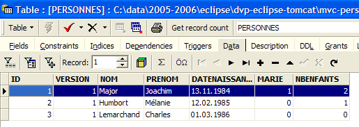
Tomcat est lancé à son tour. Avec un navigateur, nous demandons l’url [http://localhost:8080/mvc-personnes-03B] :

Nous ajoutons une nouvelle personne avec le lien [Ajout] :
 |  |
Nous vérifions l’ajout dans la base de données :

Le lecteur est invité à faire d’autres tests [modification, suppression].
Faisons maintenant le test de conflits de version qui avait été fait dans la version 1. [Firefox] sera le navigateur de l’utilisateur U1. Celui-ci demande l’url [http://localhost:8080/mvc-personnes-03B] :

[IE] sera le navigateur de l’utilisateur U2. Celui-ci demande la même Url :

L’utilisateur U1 entre en modification de la personne [Perrichon] :

L’utilisateur U2 fait de même :

L’utilisateur U1 fait des modifications et valide :
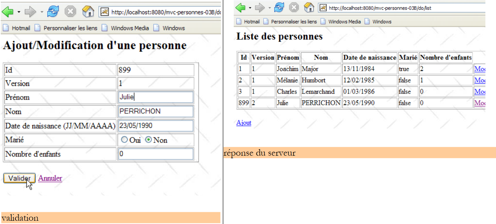 |
L’utilisateur U2 fait de même :
 |
L’utilisateur U2 revient à la liste des personnes avec le lien [Annuler] du formulaire :

Il trouve la personne [Perrichon] telle que U1 l’a modifiée (nom passé en majuscules).
Et la base de données dans tout ça ? Regardons :

La personne n° 899 a bien son nom en majuscules suite à la modification faite par U1.
17.8. Conclusion
Rappelons ce que nous voulions faire. Nous avions une application web avec l’architecture 3tier suivante :
où les couches [dao] et [service] travaillaient avec une liste de données en mémoire qui était donc perdue lorsque le serveur web était arrêté. C’était la version 1. Dans la version 2, les couches [service] et [dao] ont été réécrites pour que la liste de personnes soit dans une table de base de données. Elle est donc désormais persistante. On se propose maintenant de voir l’impact qu’a sur notre application le changement de SGBD. Pour cela, nous allons construire trois nouvelles versions de notre application web :
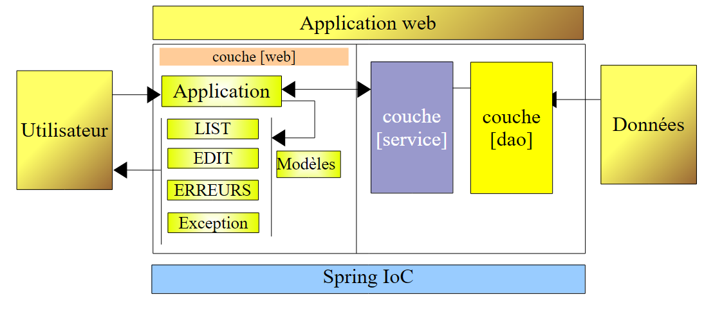 |
- version 3 : le SGBD est Postgres
- version 4 : le SGBD est MySQL
- version 5 : le SGBD est SQL Server Express 2005
Les changements se font aux endroits suivants :
- la classe [DaoImplFirebird] implémente des fonctionnalités de la couche [dao] liées au SGBD Firebird. Si ce besoin persiste, elle sera remplacée respectivement par les classes [DaoImplPostgres], [DaoImplMySQL] et [DaoImplSqlExpress].
- le fichier de mapping [personnes-firebird.xml] d’iBATIS pour le SGBD Firebird va être remplacé respectivement par les fichiers de mapping [personnes-postgres.xml], [personnes-mysql.xml] et [personnes-sqlexpress.xml].
- la configuration de l’objet [DataSource] de la couche [dao] est spécifique à un SGBD. Elle va donc changer à chaque version.
- le pilote JDBC du SGBD change également à chaque version
En-dehors de ces points, tout reste à l’identique. Dans la suite, nous décrivons ces nouvelles versions en ne nous attachant qu’aux seules nouveautés amenées par chacune d'elles.